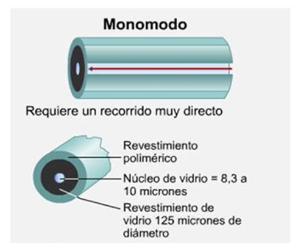

CARACTERÍSTICAS
- Diametro del Núcleo: Muy pequeño, típicamente 9 micrómetros.
- Índice de Refracción: Menor variabilidad, un solo modo de propagación de la luz.
- Distancia de Transmisión: Largas distancias, hasta varios kilómetros sin necesidad de repetidores.
- Atenuación: Baja atenuación, mínima pérdida de señal durante la transmisión.
- Velocidad de Transmisión: Mayor velocidad de transmisión de datos en comparación con la fibra multimodo.
- Aplicaciones: Ideal para redes de larga distancia y conexiones de alta velocidad, como en redes de telecomunicaciones y enlaces de fibra óptica submarina.
- Costo: Generalmente más costosa de implementar en comparación con la fibra multimodo.
- Conectores: Utiliza conectores más precisos, como el conector SC o LC.